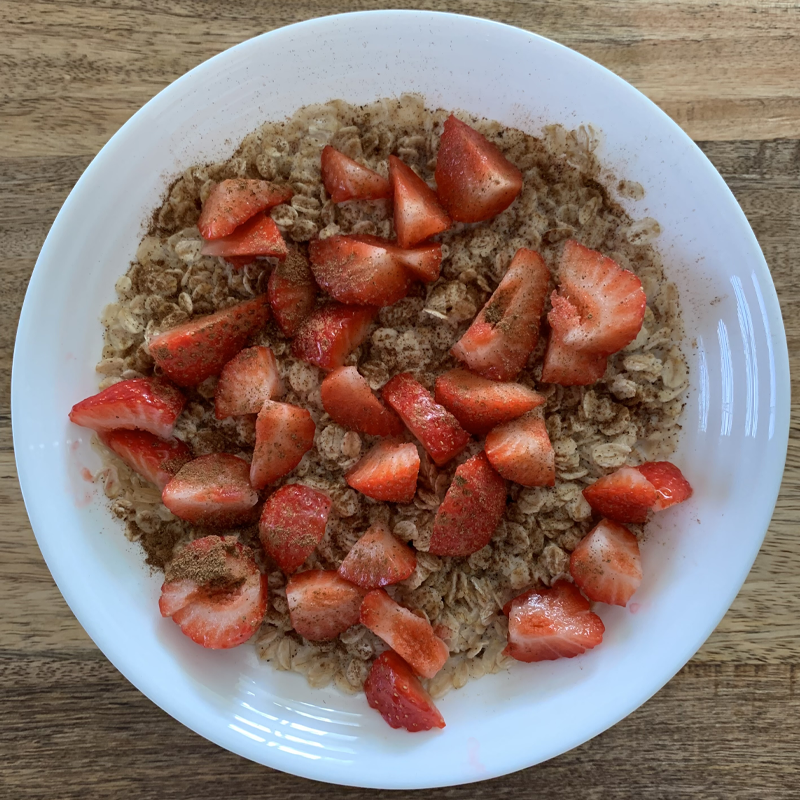

<!DOCTYPE html>
<html lang="en">
<head>
    <meta charset="UTF-8">
    <meta http-equiv="X-UA-Compatible" content="IE=edge">
    <meta name="viewport" content="width=device-width, initial-scale=1.0">
    <link rel="stylesheet" href="/styles.css">
    <title>Oatmeal</title>
</head>
</html><h1 class="main-header">Oatmeal</h1>
</oatmeal>
<body>
    <section>
        <p>This simple yet amazing recipe will get you sorted during the
            bulking season in a very cheap and swift but tasty manner!</p>
    <p>Packed with carbs and fiber as well as a fair amount of protein
        you will be wishing for more once it's gone!
    </p>
    <p>(It is perfect to prepare this meal for your first dinner date as well!)</p>
    </section>
    <h3>Ingredients needed</h3>

<ul>
    <li>Oats</li>
    <li>Milk</li>
    <li>Honey</li>
    <li>Strawberries</li>
    <li>Cinnamon powder</li>
</ul>


<em style="margin-bottom: 100px; ">For this recipe we used strawberries, however, fruits can be substituted to your liking.</em>
<em>Another choice I like is bananas with blueberries for example.</em>

<h3>Recipe Step-by-step</h3>
<ol>
    <li>Pour oats into a bowl</li>
    <li>Add a bit of honey into it</li>
    <li>Next, add some milk</li>
    <li>Heat the oats up until they soaked up some milk</li>
    <li>Add in your sliced up strawberries</li>
    <li>Sprinkle with cinnamon powder on top</li>
    <li>Serve!</li>
</ol>
</body>